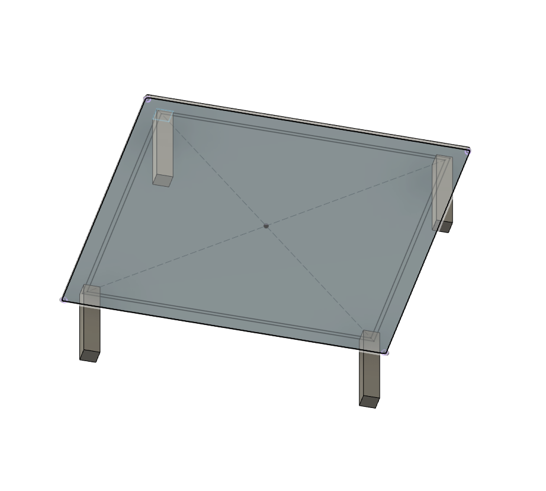

Before I began modeling, I drew up some concept sketches based on the
furniture in my home. This way I had a better understanding of the
size of both a table and a chair, things like how tall they are, how
thick their pieces are, or how it is assembled. I sketched a top,
side, and bottom profile for the table and a side and front profile
for the chair.
In order to build a model that could be easily changed, without major
reconstruction, I started modeling from the top down. To do so I first
made an offset plane to be the reference for my sketch of the top of
the table. Next, I extruded this surface half an inch and rounded the
edges using the fillet tool. The next sketch I made was for the skirt
on the bottom of the body I just created. I made another half-inch
thick rectangle, that was two inches from the edge of my tabletop. I
then extruded this skirt three inches below my body. Lastly, I needed
to add legs to my table so I made a two-inch square overlapping one of
the corners of the skirt by a quarter of an inch. I then extruded
this square 5inches below the tabletop. To get four of them, I then
used the pattern tool and used my sketch as the path for the new
legs. I wanted my legs to taper off to the bottom after the first
five inches, so to do so I used the loft tool. Back on the base
plane, directly below each of the four half-legs, I sketched a 1.75″
box. I then lofted the base of each of the legs to their respective
sketch below to get the tapered legs.
I started making the chair slightly differently than the table
however, I still wanted it to be easily adaptable so if I wanted to
go back and make changes it would be a simple process. To start I made
a sketch of the two side frame pieces and extruded them an inch and a
half. I then used the move tool to copy them and move them to the
other side creating a frame. The next step was to connect my vertical
legs with horizontal supports to complete the frame. To do so I made
sketches on the insides of the frame and used the extrude tool to
extrude them to an object (the other side of the frame) and create
the supports. The same process was used for the other direction. After
I had made the frame I needed to put a seat on top. In order to fit
it nicely in my frame, I made a sketch on the plane where the seat
and the frame would be connected. Since I had already made my frame,
I was able to use its reference points to build the seat to fit
perfectly in the frame. Once I had finished my sketch, I extruded the
surface half an inch. I used the fillet tool to round the front
edges and the top edge of the body. The last thing I needed to add was
the backing to fully fill in the frame. I started off by adding a
thick crossbar near the top of the back frame. I created a sketch on
the inside of one of the posts and extruded it to the inside of the
opposing post. Next, to get the vertical beams to align from the
crossbar to the back of the seat, I needed to use the loft tool.
First, I made a sketch of three, one by one half inch rectangles on
he bottom of the crossbar. Then, I sketched three matching rectangles
on the seat below. I made sure my sketches were aligned and then I
used the loft tool to create each of the bars down the back of the
chair.

Modeling Furniture
Modeling a chair and table found in a common home using Fusion 360.
